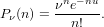

RANDP Generate Poisson Random Variable
Section: Random Number Generation
Usage
Generates a vector Poisson random variables with the given
parameters. The general syntax for its use is
y = randp(nu),
where nu is an array containing the rate parameters
for the generated random variables.
Function Internals
A Poisson random variable is generally defined by taking the
limit of a binomial distribution as the sample size becomes
large, with the expected number of successes being fixed (so
that the probability of success decreases as 1/N).
The Poisson distribution is given by

Example
Here is an exmaple of using randp to generate some Poisson
random variables, and also using randbin to do the same
using N=1000 trials to approximate the Poisson result.
@>